Light Array 9
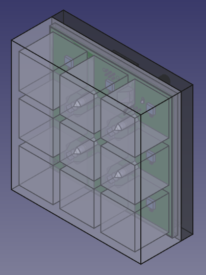
Light Array 9 is a 3x3 RGB LED display powered by a USB Type-C jack. A button and knob on the back lets the user change the displayed pattern and its speed (or other parameter). Its design focused on ease of manufacturing.
Motivation
- Make something to give away at Christmas. This meant easy small batch production.
- Gain more experience with product development. I designed the whole thing and had to solve the mechanical/electrical/ID conflicts.
- Practice STM32 firmware development. This is the first non-trivial project where I've written all the code myself. It's also the first time I wrote a library.
- Explore 3D modeling and printing. My company was kind enough to let me use their printers. Who would turn that down?
Schematic
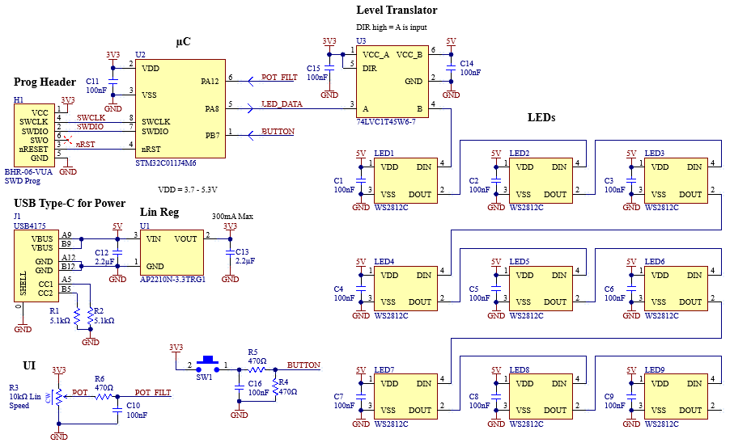
The schematic is pretty straight forward. An STM32C011 is programmed via SWD to output colour information to a 3.3V to 5V level translator which sends it to the daisy chained programmable RGB LEDs. A button is used to change the light pattern and a knob can control one of the pattern's parameters, usually speed. Power comes from a USB Type-C jack which provides 5V to the LEDs and a 3.3V linear regulator that poweres the microcontroller.
The STM32 uses its internal clock, so the only external components it needs is a 100nF cap and a programming header. The button has a bit of debouncing I found was necissary during testing and the pot has a probably unnecessary low pass filter.
I picked the STM32C011J4M6 becasue there's something really satisfying about using a low pin count µC and it was the easiest package to solder.
I wish I had picked the WS2812B instead of the WS2812C because it's a lot more popular. I'm planning to make a much larger display and can only find LED strips that use the B variant.
PCB
My main goal for the PCB was to keep it to 2 layers while also providing a solid ground plane under every trace. I was mostly sucessful. The central "E" shaped area on the LED side is the 5V power plane.
THe location of the knob was a bit of a negotiation, since the TH pins were conflicting with the nearby LED.
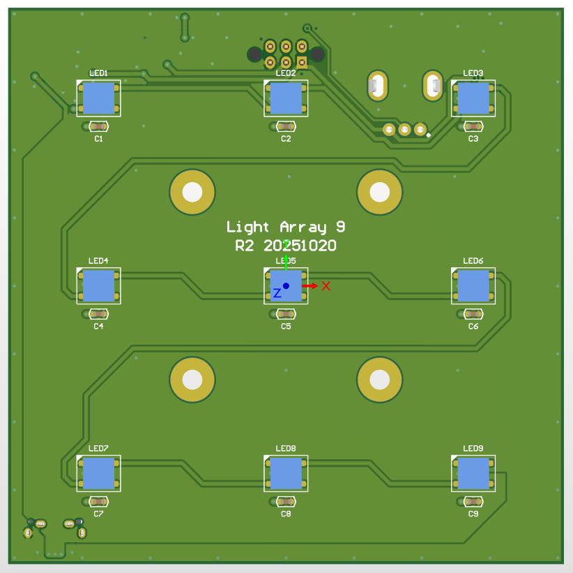
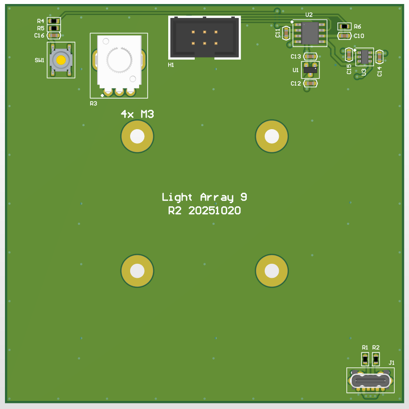
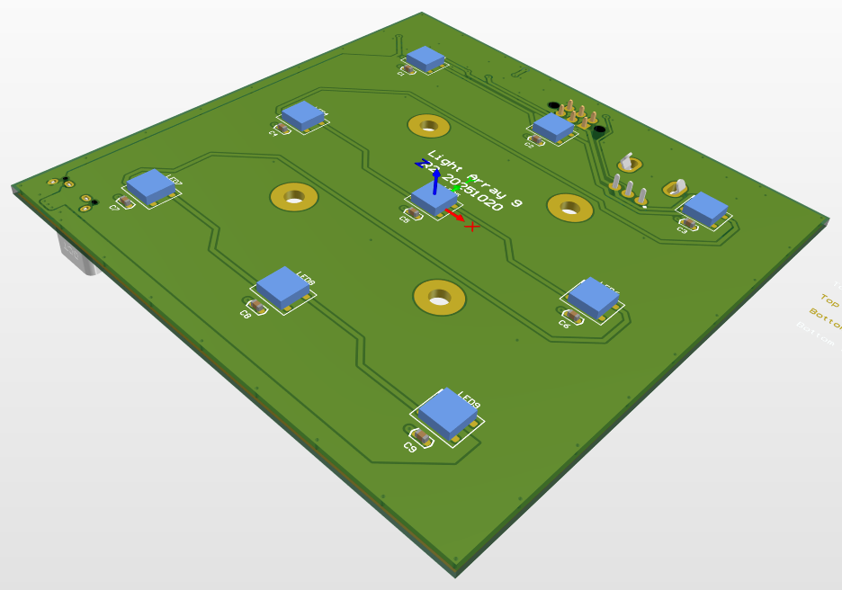
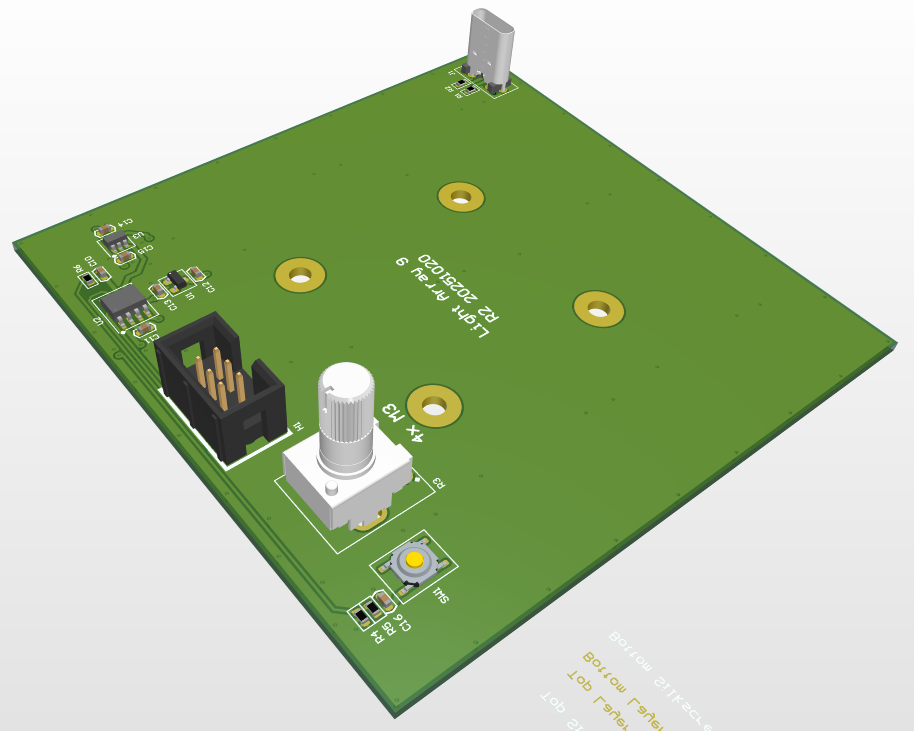
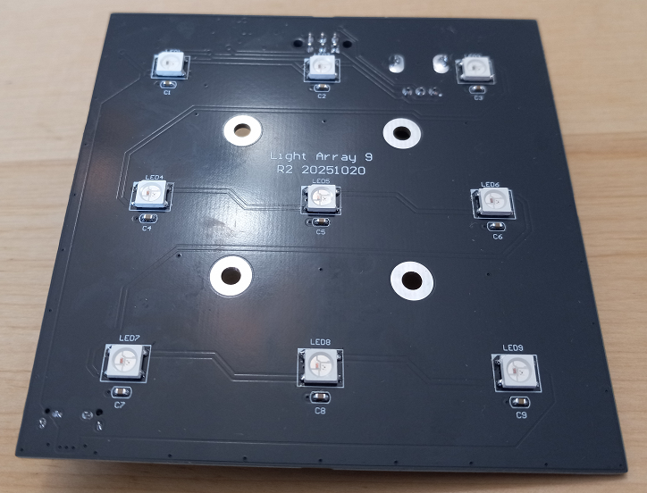
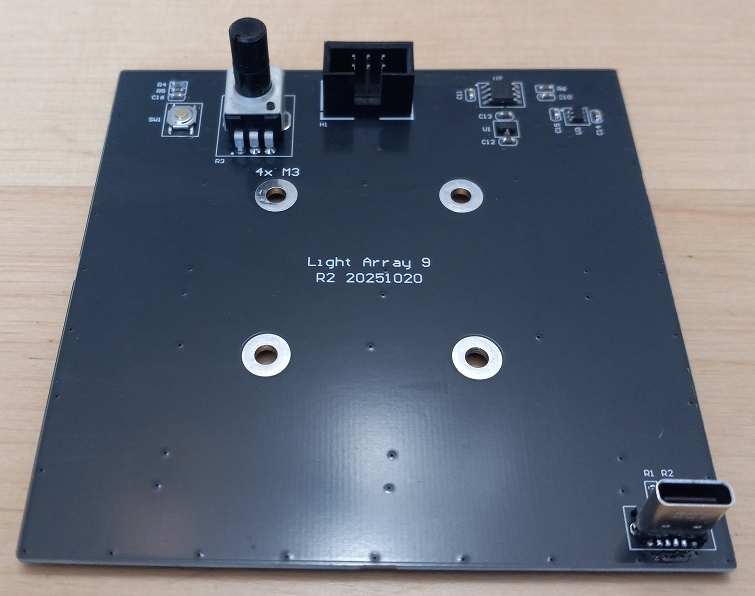
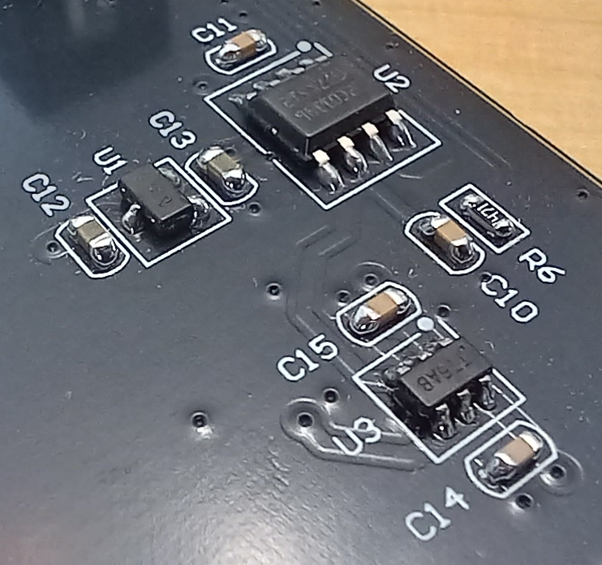
Enclosure
Designed in FreeCAD. I put some thought into how to design the enclosure so that it wouldn't require supports when printing. The overall design ensured a flat face for each piece with no lips that would require large central supported areas. Any overhangs were chamfered at 45°.
My main regret was putting the screws at the central wall intersections instead of in the corners. I thought it would be too crowded in the corners and block less light in the center, but in hindsight I probably could have made it work. As it is, there's sometimes gaps between the enclosure pieces when assembled.
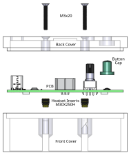
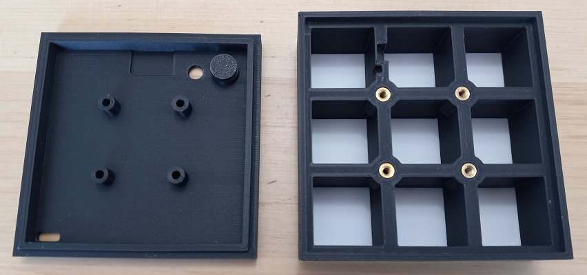
The front cover was printed for the first 0.6mm (3 layers) with matte white PLA to form the light diffusor.
Front Cover
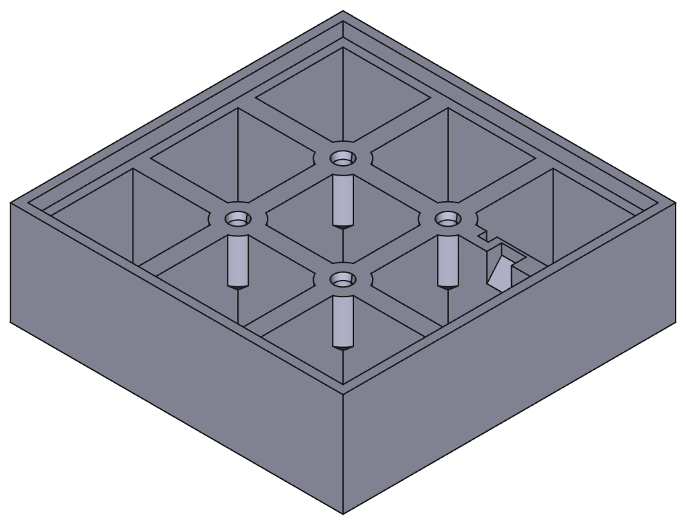
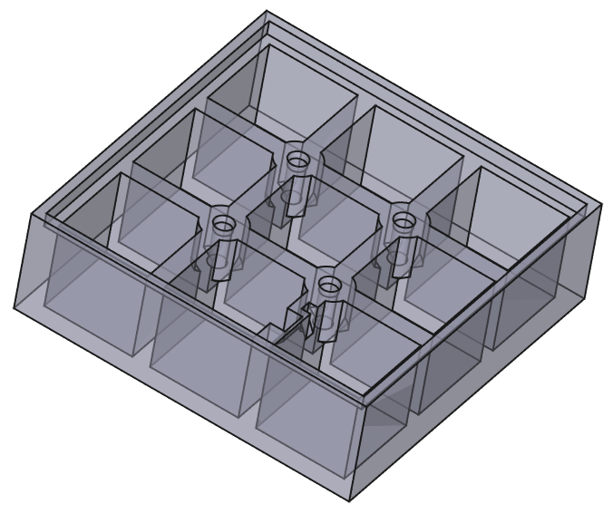
The cutouts in one of the walls accomidate the pot's TH pins. The 4 holes are for heatset inserts.
Heatset Inserts
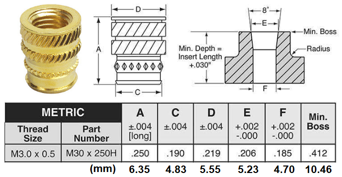
| MFG | Tri-Star Industries |
| MFG PN | M30X250H |
| Supplier | DigiKey |
| Supplier PN | 2254-M30X250H-ND |
| Supplier Link | Link |
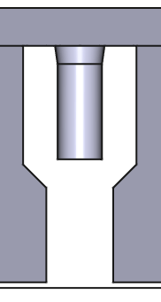
Cross section of the heatset insert hole.
Back Cover
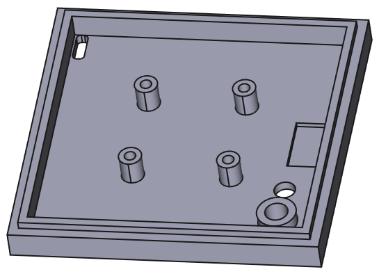
The square recess provides clearance for the programing header.
Button
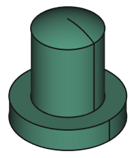
This was the first time I designed a button cap. I think it turned out well, with a good feel.
Assembly
There were a few problems during assembly. The button cap didn't move freely in the hole in its hole. This was the first time I'd heard of 3D printer seams. If I redesign the enclosure I'd add a small channel down the side of the hole for the seam to go down and not protrude into the button cap.
There was also a problem with getting the USB jack to line up with its hole, which I solved by just making the hole bigger. I don't think this was the best solution since I was hoping for a tight fit to provide some mechanical support.
I also had a problem with, when the screws were fully tigntened, a few of the knobs rubbing with the enclosure, which made them hard to move. I had to sand a bit and nudge things to get them to work.
As mentioned earlier, some of the seams between the front and back pieces were gappy. It would have been better to have the screws in the corners instead of close to the center.
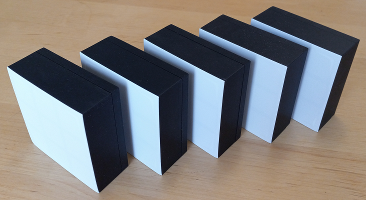
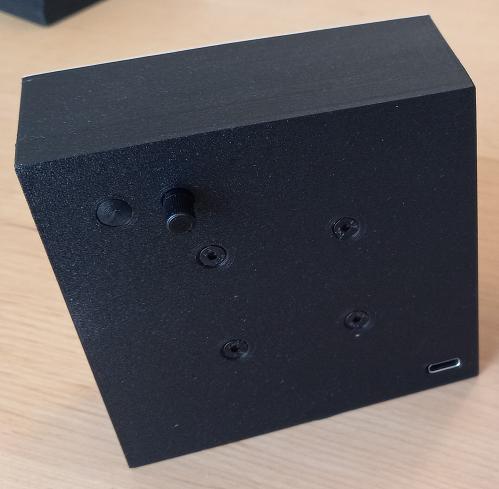
Light Diffuser
Oh boy, could I have spent a lot of time fiddling around with the light diffusor. Every detail was up in the air. For example, the sandpaper grit and sanding pattern when I was testing acrylic. Here's an example of a medium fine grit, sanding horizontal on the front and vertical on the back.

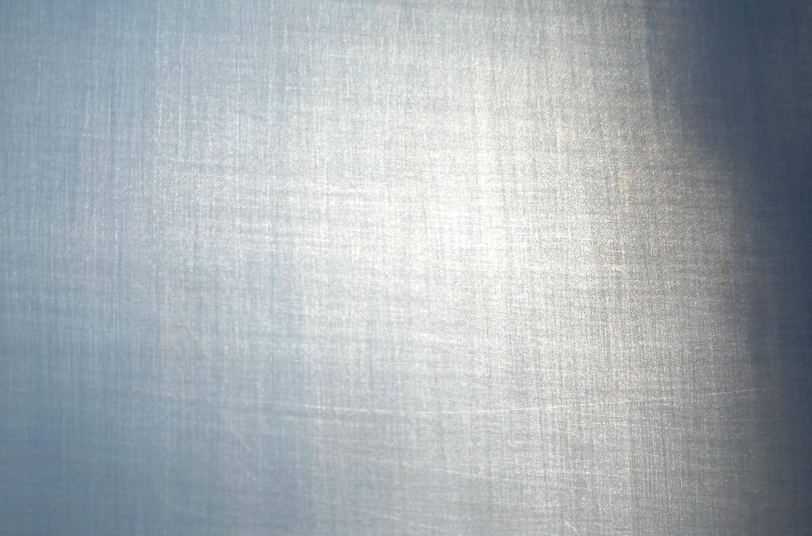
Translucent filament seemed like the obvious choice, but I rejected it because the individual filament lines were visable.
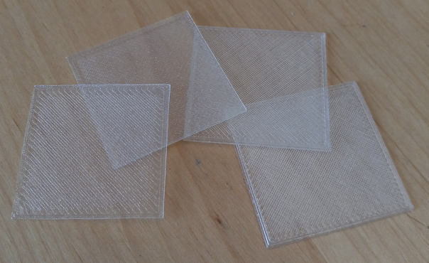
Translucent filament samples with increasing thickness.
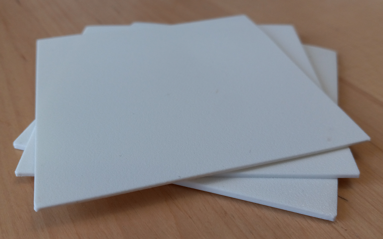
Matte white PLA samples with increasing thickness. They were all too thick.
I also spent some time fiddling with the front cover. I printed some spacers that could stack on top of each other in order to change the distance between the diffusor and LEDs.
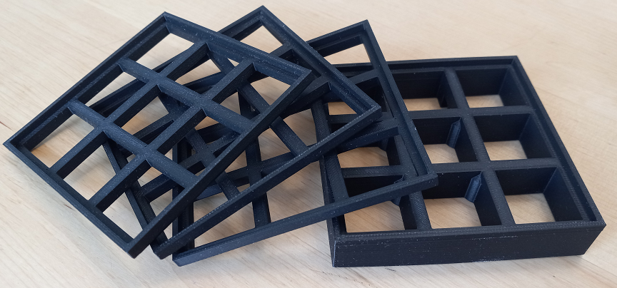
I also tried aluminum tape on the walls. This made that light noticably brighter, but it would have been too much work to mass produce. Interestingly, the wrinkles in the aluminum tape were distinguishable. To avoid that, one thing I'd like to try in the future is to get little 1x1" mirrors that could be glued into recesses in the walls.
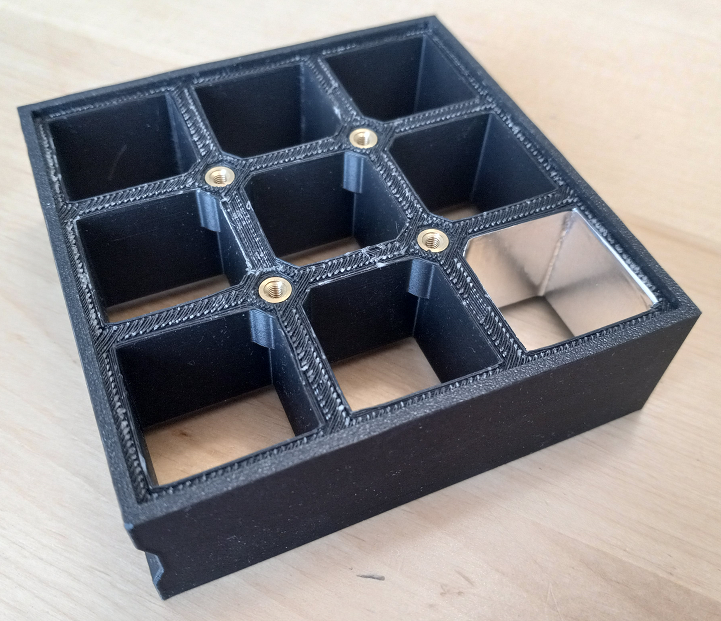
This was an early prototype that required a large central support to enable the rim around the edge. It was pretty annoying to remove, which motivated me to change the design to not require any supports.
Also visable is a cable channel I was testing with the intent to make the whole thing tileable. That idea was discarded for this first project.
As an example of how deep diffusor design can suck you in, here's an interesting video that shows a creator named Geeksmithing experimeting with black LED acrylic: Link to video.
Firmware
Gamma info: https://mountainlizard.com/posts/gamma-ws2812/.ioc Configuration
Perph 1
Perph 2
main.c
See if there's a good way to include the non-auto-generated code
lib_WS2812C.c
Debugging
Talk about using logic probe, all issues. Show Logic screenshot of it working.